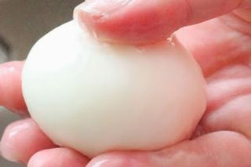
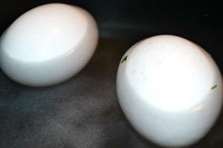
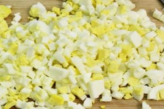
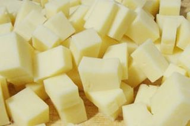
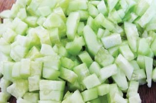
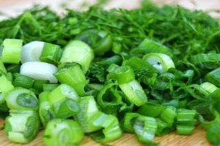
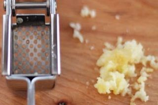
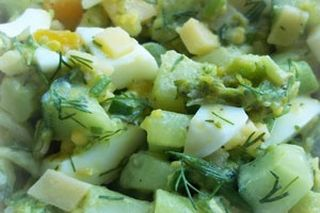

Шаг 1: подготавливаем куриные яйца.

Этот вида салатика не только вкусный и полезный, но также очень сытный, вполне заменяющий легкий завтрак либо ужин. Итак, сначала при помощи мягкой кухонной губки промываем сырые куриные яйца под струйками холодной проточной воды. Зачем это надо делать? Все просто! Чтобы во время тепловой обработки вредные вещества, находящиеся на поверхности скорлупы, не проникли в белок через расширяющиеся поры.
Шаг 2: варим куриные яйца.

Дальше кладем яйца в небольшой сотейник, добавляем к ним по паре столовых ложек соли, 9-% уксуса, заливаем очищенной водой выше их уровня на 2–3 сантиметра, ставим на средний огонь и после закипания варим 10–11 минут вкрутую. Потом, помогая себе шумовкой, перемещаем данный ингредиент в миску с ледяной водой и остужаем до комнатной температуры.
Шаг 3: подготавливаем отваренные куриные яйца.

Спустя некоторое время, когда яйца остынут, снимаем с них скорлупу, снова промываем, сушим бумажными кухонными полотенцами, выкладываем на разделочную доску, нарезаем кубиками и перекладываем в глубокую миску.
Шаг 4: подготавливаем твердый сыр.

После этого чистым ножом срезаем с твердого сыра парафиновую корочку и шинкуем его на крупной терке либо крошим, так же как предыдущий продукт, и отправляем следом за ним в ту же миску.
Шаг 5: подготавливаем овощи и зелень.

Теперь очищаем от кожуры чеснок и промываем его под водой вместе с огурцом, а также любимой зеленью. Сушим все бумажными полотенцами и продолжаем подготовку. С огурчиков по желанию снимаем кожуру и измельчаем их кубиками, соломкой, кольцами, полукольцами или их четвертинками.

Укроп и зеленый лук просто мелко рубим.

Зубчики чеснока пропускаем через специальный пресс, выкладываем на столешницу остальные нужные ингредиенты и приступаем к следующему шагу.

В глубокую миску с отваренными нарезанными куриными яйцами, а также сыром кладем измельченный огурец, укроп с зеленым луком и выдавленный чеснок. Приправляем все по вкусу солью, сметаной либо майонезом и перемешиваем столовой ложкой до однородной консистенции. Салат готов!